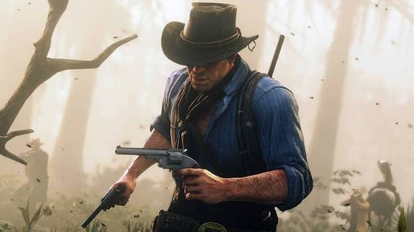
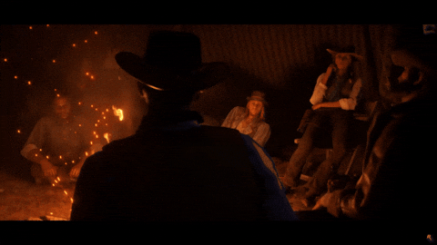
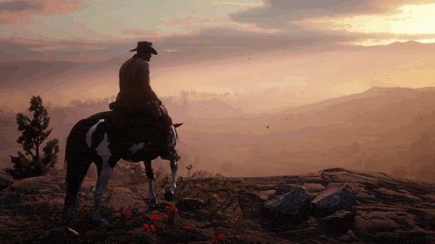
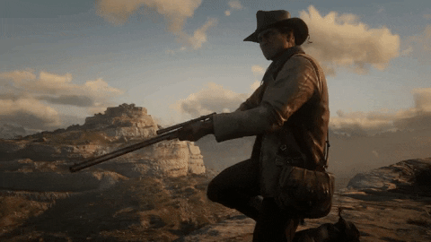
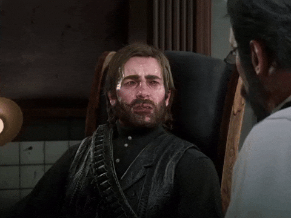
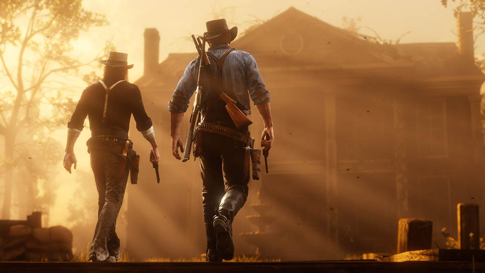
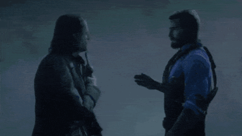

REFLEXÃO PESSOAL
(contém spoilers)
Eu comecei a jogar Red Dead Redemption 2 em 2022 e, até hoje, essa obra me impacta profundamente. Uma das coisas que mais me conectou com o jogo foi a forma crua e sensível como ele retrata pautas profundas do fim do século XIX, mas que continuam extremamente atuais: a desigualdade social, a ganância do capitalismo industrial descontrolado, a hipocrisia das elites, o preconceito racial e o desamparo dos marginalizados. No entanto, para mim, a principal mensagem que a obra passa é sobre a busca pela verdadeira liberdade e a redenção.

A gangue de Dutch van der Linde não caminha pelo mapa apenas como fora da lei em fuga; eles representam um grupo de renegados buscando viver à margem de um sistema opressor. Dutch vende a ideia de que existe um lugar onde todos podem ser verdadeiramente livres, sem as correntes de um governo corrupto e da industrialização implacável. No entanto, ao longo da jornada, percebemos o preço e as ilusões dessa promessa.

Um exemplo marcante dessa dinâmica é o contraste entre os acampamentos da gangue e o avanço de empresários sem escrúpulos, ou famílias aristocratas decadentes que constroem suas riquezas sobre a exploração e o preconceito. A população vulnerável, desde trabalhadores explorados nas minas e fábricas até os povos nativo-americanos na reserva Wapiti, é massacrada em nome do "progresso".

É no meio desse colapso moral que acompanhamos Arthur Morgan. Inicialmente, Arthur enxerga a liberdade apenas como a lealdade cega à sua "família" e à arma em sua cintura. Mas, ao ser confrontado com a própria finitude e ver o sofrimento provocado pelas escolhas da gangue e pela ganância do mundo exterior, Arthur passa por um despertar emocional. Ele começa a enxergar caminhos que não via antes.

Um dos momentos mais emocionantes e profundos da narrativa acontece quando Arthur decide agir não por ganância ou sobrevivência, mas por compaixão pura. Após descobrir que possui tuberculose, ele usa tempo que lhe resta para libertar pessoas: ajuda Eagle Flies e o povo Wapiti a defenderem sua dignidade, protege viúvas e necessitados, e faz de tudo para garantir que John Marston e sua família tenham a chance de construir um futuro longe do ciclo de violência.

Enquanto a maioria dos homens no Velho Oeste busca poder, terras, ouro ou domínio a qualquer custo, o arco final de Arthur Morgan nos mostra que o verdadeiro significado de ser livre não é viver sem leis para fazer o que quiser, mas sim ter a coragem de fazer o certo e libertar aqueles que não podem se defender. Para Arthur, a redenção foi a sua forma de alcançar a liberdade definitiva — sem correntes, sem dívidas e em paz com a própria alma.

Red Dead Redemption 2 me marcou porque não é só sobre tiroteios. A obra mostra o fim da era dos fora-da-lei e o que acontece com quem não tem mais lugar no mundo. Para mim, a principal mensagem é sobre lealdade e redenção: até onde vale a pena seguir alguém em quem você deixou de acreditar? Um exemplo disso é a jornada de Arthur. Ao descobrir que está doente, ele passa a repensar tudo o que fez e tenta ajudar quem ainda tem chance de uma vida melhor. No fim, a história mostra que a honra não está no que você diz, e sim no que você escolhe fazer quando já não tem mais nada a perder.
